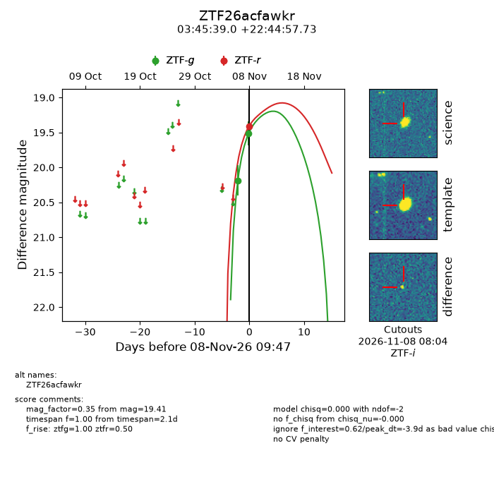
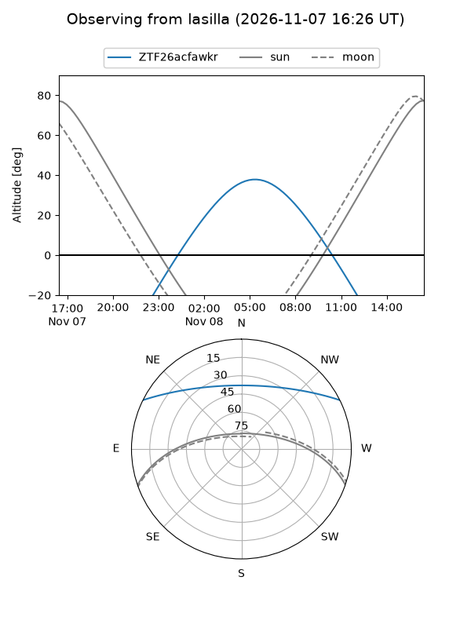
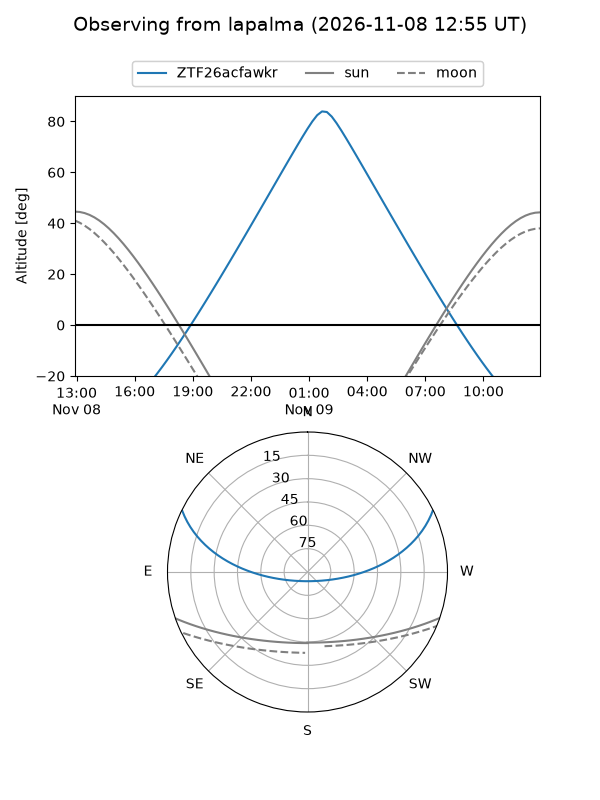
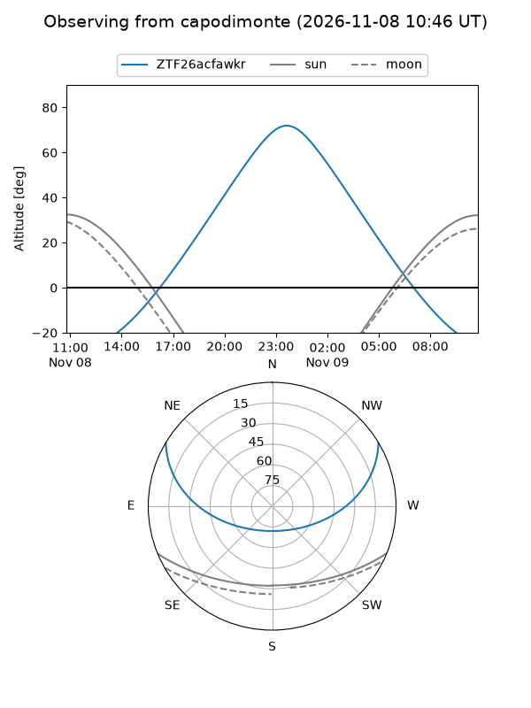
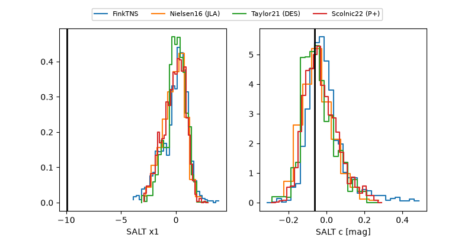

ZTF26acfawkr
Target ZTF26acfawkr at 2026-11-08 09:49
Aliases and brokers:
FINK-ZTF: ztf.fink-portal.org/ZTF26acfawkr
Lasair-ZTF: lasair-ztf.lsst.ac.uk/objects/ZTF26acfawkr
ALeRCE-ZTF: alerce.online/object/ZTF26acfawkr
Direct TNS query: direct search
alt names
ZTF26acfawkr (ztf,fink_ztf)
Coordinates:
equatorial (ra, dec) = 56.4124,+22.74937
equatorial (HMS+DMS) = 03:45:38.98,+22:44:57.73
galactic (l, b) = (167.3298,-24.73996)
Flags:
peak dt: -3.9
Photometry:
last ztfg=19.51, ztfr=19.41
2 ztfg, 1 ztfr detections
Lightcurve

Visibility



Additional plots
